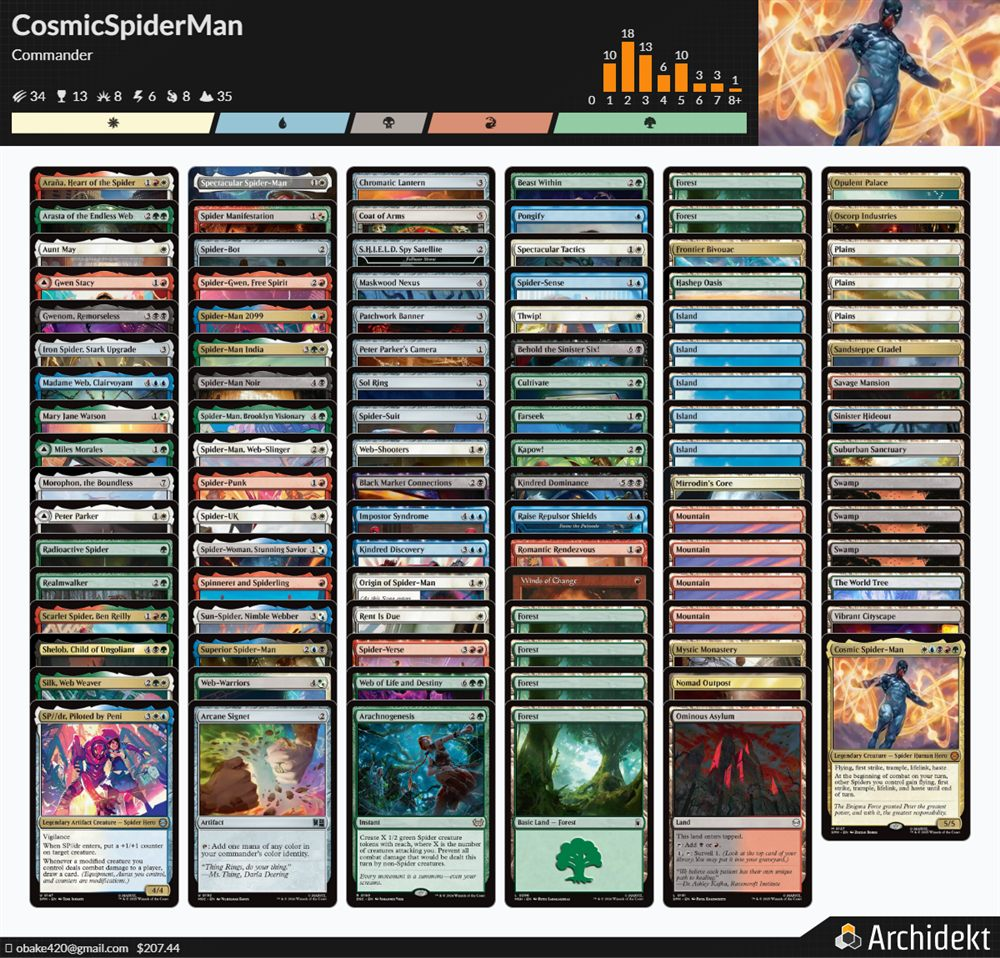
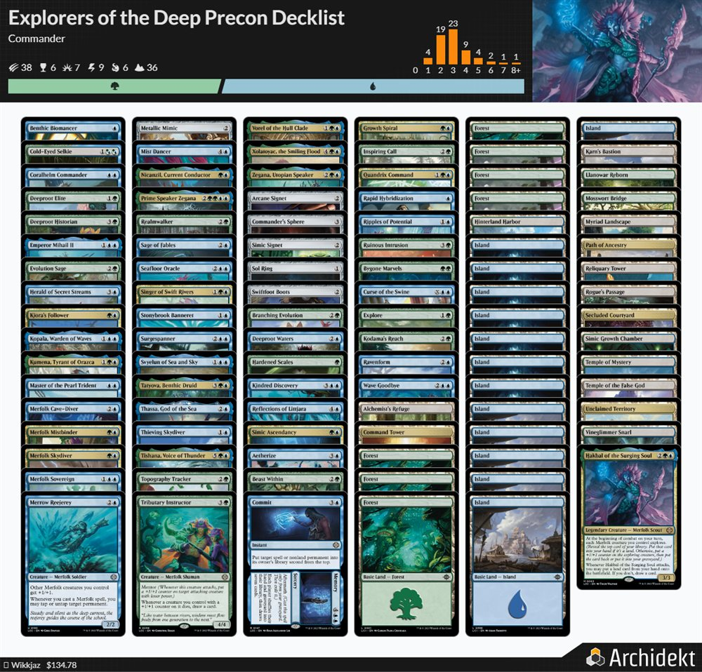

● Last verified Jul 16, 2026
You bought a Commander precon, maybe put fifty dollars into fixing the mana or sharpening the removal, and now you're standing outside a local game store with a deck box in your hand and no idea what to say when someone asks what your deck does. Here's the fix: a precon isn't a lesser deck you have to apologize for. It's a passport — legal, coherent, and socially legible the moment you can say four honest sentences about it. Learn the four sentences and the deck box stops feeling like a confession.
A precon is not an apology
Somewhere between building the deck and sitting down at the table, a lot of new Commander players talk themselves into treating the precon in their hands like a placeholder — the thing they play until they've earned a "real" deck. That's backwards. A precon is legal, it's functional, and it's recognizable, which is the part that actually matters at a table full of strangers. Most players who've been in the format a year or two have at least a rough sense of what "precon" means, even if the exact power level drifts from product to product and year to year. That shared shorthand is worth more to a new player than one extra removal spell would be.
The mistake was never owning a precon. It's not being able to say anything about it beyond "I bought a deck." A stranger can work with "I'm on a mostly-stock precon, still learning it." A stranger can't work with silence, and silence is what a lot of nervous new players default to.
The four sentences
Before a new table has any real information about you, it's already trying to answer one question: what kind of game is this about to be? You can hand them the answer for free, in four sentences, before anyone shuffles.
The deck sentence. "My deck is trying to [do the thing] by [doing it this way]." "My deck wants a wide board and wins through combat." "My deck fills the graveyard and gets creatures back." One sentence, not a decklist recitation.
The upgrade sentence. "It started as a precon, and I mostly upgraded [mana / draw / removal / synergy]." This one carries more weight than new players expect — a fifty-dollar upgrade isn't a fixed power level, it's a category of change, and the category is what the table actually needs to hear.
The table sentence. "I'm looking for [a casual, interactive game / something patient while I learn threat assessment / a stronger table, I don't mind]." This turns a vague fear of getting crushed into something closer to matchmaking.
The help sentence. "If I miss a trigger, I'm happy to learn." Six words that hand the table a job without asking anyone to play the game for you.
// take this with you
Fill this out before you leave the house. Say it out loud at the table if you want, or just let it organize your head on the drive over.
My commander: My deck's main plan: The deck wins by: The deck needs time to: The one thing I'm still learning: The kind of table I want:
What the fifty dollars actually changed
Not all fifty-dollar upgrades are the same fifty dollars, and treating them as interchangeable is where new players get quietly ambushed by their own deck.
Fixing the mana or adding card draw mostly lowers frustration — the deck casts what's already in it more reliably, and "more reliably" isn't the same signal as "more dangerous." Tightening the deck's actual plan, more of the tokens, more of the graveyard payoff, whatever the commander was already trying to do, makes the deck do its own thing more often. That's usually the best upgrade for identity, and it rarely changes what a table should expect going in.
Tutors and fast mana are a different animal. They raise the deck's practical power through consistency, speed, or both — a deck that can go find its best card on demand, or get there a turn or two early, isn't just smoother, it's operating ahead of the curve a normal draw would put it on. "Faster" is exactly the word a new table needs to hear before the game starts, not after somebody's board gets wiped on turn four. Same with a finisher that turns a slow, casual-looking deck into something that closes hard once its pieces line up. None of this means don't buy those cards. It means the deck sentence has to keep pace with what the money bought. "Lightly upgraded" stops being an accurate sentence the moment the upgrade changes the finish and not just the floor.
If you can't say which category your fifty dollars bought — smoother, more consistent, or sharper — that's worth figuring out before the table does it for you.
Where this breaks
Last time a friend of mine was in town, we couldn't find an open table at a decent local shop, so we just set up a casual 1v1 at the kitchen table instead. He'd picked up Explorers of the Deep, the Ixalan merfolk precon, stock, straight out of the box. I sat down across from him with a hand-built five-color pile I'd been putting together for fun — a "cosmic Spider-Man" WUBRG deck, ambitious, still finding itself.
View the actual decklist — Cosmic Spider-Man

View the actual decklist — Explorers of the Deep

It never found itself in time. That merfolk deck ran on Explore, and it had real cohesion around that one mechanic — every card seemed to know what the others were doing, drawing into more gas or hitting land drops turn after turn, while my five-color homebrew was still trying to remember what it was supposed to be doing. I didn't win a game, and I ended up buying that exact merfolk deck myself afterward, which tells you everything about how that weekend went. A deck I'd spent real time building, in five colors, lost clean to a deck he bought sealed in a single box. That's with a friend, zero social stakes, both of us laughing about it by the second loss. Put that same power gap across a store table full of strangers instead, and it stops being funny fast — which is exactly why the deck sentence has to be honest, and why "just a precon" undersells what's actually sitting in some of those boxes.
If he'd said his own four sentences before we sat down, the honest version would've been almost boring: "My deck is Merfolk tribal — Hakbal of the Surging Soul at the helm, lords like Coralhelm Commander and Merrow Reejerey pumping the whole team, and card draw off landfall from Tatyova and Cold-Eyed Selkie so it never runs out of gas. It's the stock Explorers of the Deep box, nothing upgraded yet. I'm just here for something casual while I learn it." Every word of that is true, and none of it sounds like a threat. That's exactly the trap the deck sentence exposes: a stock precon that curves out clean, draws a card most turns, and buffs an entire tribe doesn't need a splashy finisher to run over a home-brewed five-color pile that's still finding its legs. The sentence describes the plan. It doesn't cap the ceiling.
Rule 0 isn't a confession booth, and it isn't a rubber stamp either. It's the one moment where an inaccurate sentence costs the whole table a bad night instead of just costing you one. Say what changed. Nobody's grading the wording.
The first skill is explaining your deck
You don't get good at Commander by memorizing what everyone else is running. You get good at it by getting fast and honest about answering one question before anyone has to ask it twice: what is this deck trying to do, and what did I do to it? Threat reading, tuning, knowing when to hold interaction — all of that comes after, and comes easier once the table already trusts the first sentence you gave them.
A precon doesn't need an apology. It needs four sentences, said out loud a couple times before you ever reach for the deck box.
One real writeup per email
If this is your kind of thing, I send one practical piece like it when it's worth your time — QA systems, builder notes, or table talk like this. No roundups, no filler.
Continue the conversation
A new player's firsthand case for taking a precon straight to Commander night instead of waiting until you've built something "real." This piece covers the buy-in; the four sentences here cover what to say once you sit down.
The current official vocabulary for pregame power-level conversations. A living reference, not a replacement for the four sentences — brackets can change; saying what your deck does out loud doesn't stop mattering.
Find the original list, compare it against your upgraded version, and see exactly what your changes actually did to the deck.